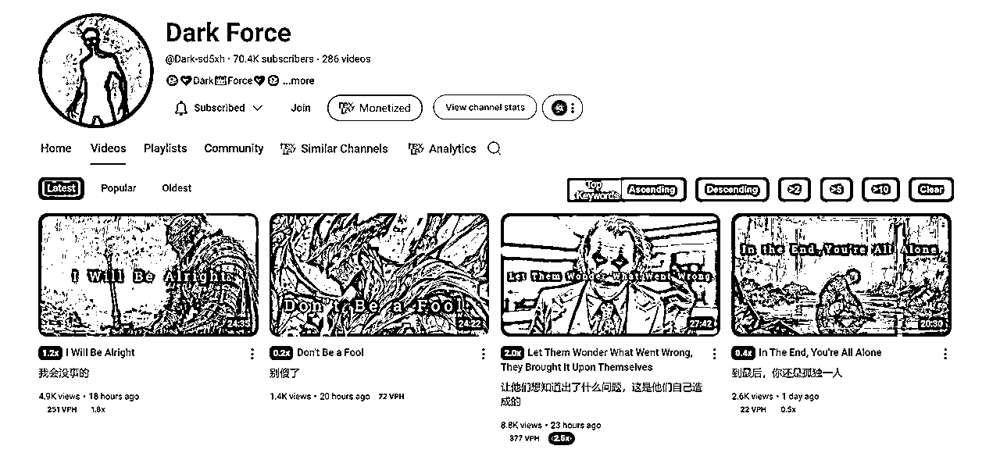
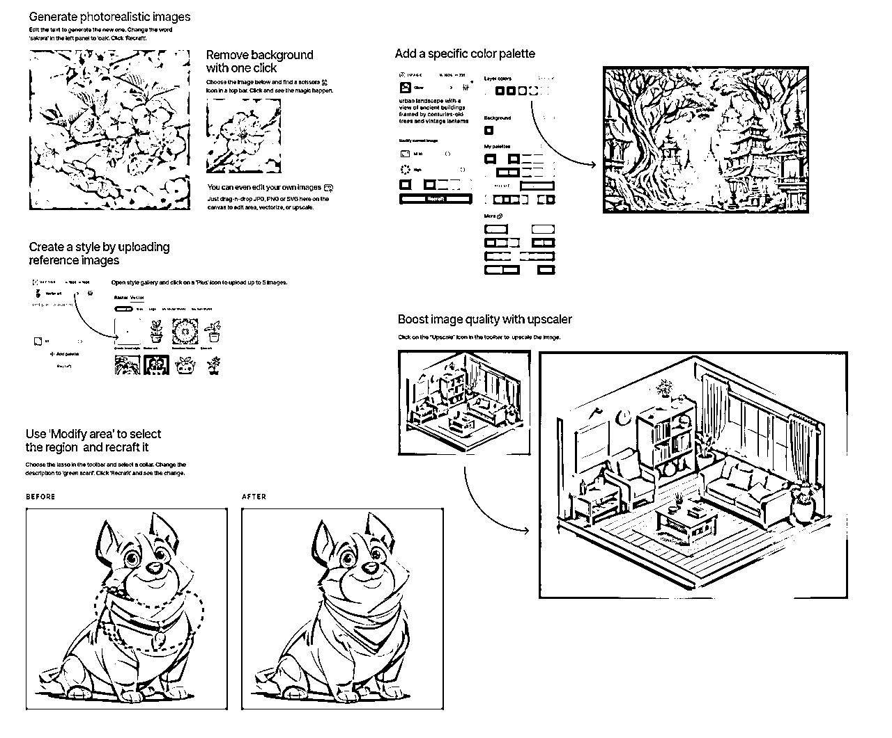

来源：https://kcnha77wofo0.feishu.cn/docx/VgPGdd956oHWR6x2H8zcB2W2nKb
长期目标：
希望将youtube作为一项长期副业或者升级为主业。
因此选择做youtube英文长视频频道。
这次的短期目标：
首要目的：快速跑通MVP，完成长视频的YYP 实现盈利
次要目的一：熟悉AI工具使用
次要目的二：熟悉YouTube火热赛道，规则玩法
基于这些目标，所以具体频道选择上要求有两点，快速开通盈利，AI提效制作简单。
选择大于努力，在赛道和利基上花了不少时间调研。下面是从赛道到利基的一步步过程。
进一步将赛道/利基选择标准具体化到三点：
调研下来的方向有以下几个，避免头重脚轻，具体的频道分享以及我的调研方法放在第六节附录了，这里只是简单列个纲要：
......
这个赛道有很多AI自媒体在做，涨粉也很快，AI是很热门的赛道，可以长期作为IP来做，但制作相对复杂。可以作为一个长线频道来做，后续可以考虑做起来，但不太符合这次的短期目标。
......
故事类永远都有市场，可以找到垂直细分赛道，找到一些迅速蹿升的赛道下功夫复刻，学习视频制作的亿些小技巧。
......
励志成长类，也是一个经久不衰的大类，看到了很多老频道依然很有流量，这是人的长期需求，因此总是能做的，但是要想起号，得找到一个合适的利用AI的方式。
以上三个赛道都有找到能满足第一点和第二点的要求的频道，但我只在励志成长赛道找到了符合第三点的要求的频道，即可以AI提效制作简单。因此暂时先选择励志成长赛道。
在励志成长赛道中，我研究了以下一些利基中的一些频道。
最终选择以反派励志这个利基，以此展开分析。
最初是看到一个频道的视频列表中， 关于电影动漫中反派恶棍的言论混剪，播放量远高于该频道内其他视频，基于这个异常值，在视频播放页面右侧的推荐栏目进一步寻找，发现了更多。
比如以下这种，小丑也是也是反派中的例子之一，小丑或者其他反派作为背景视频，加上励志语录。
视频话题：转变，孤独，恐惧，接受自己，如何处理孤立，如何处理一系列可能的心理问题等等。
绝大多数励志视频都是从正面人物的视角出发进行说服，反派视角相对来说新奇新鲜，更加能抓人眼球。
反派其实大多都有一个强大，有执行力的印象，从他们的口中说出来的东西更有力量。反派的说法也能抓住部分人的逆反心理。当然我们不输出那种偏了的价值观，只是借助形象来说励志激励的演讲谈话内容。
我主要关注从第一个视频发布开始到开通盈利的时间，视频发布频率，以及盈利估算。
反派励志利基，由于这个类型的频道都比较新，没有找到一年以上的，刚开始不久的频道也有一些，方兴未艾，目前盈利都不能算特别夸张，因此盈利估算只做参考。
下面这个频道已开通盈利（Monetized）, 从第一个视频发布到现在八个月，说明到开通盈利的时间小于八个月，大概三四天发布一个视频。根据social blade估算，每月盈利$56 - $903
下面这个频道已开通盈利（Monetized）, 从第一个视频发布到现在五个月，说明到开通盈利的时间小于五个月 ，最近一天发布两三个视频。根据social blade估算，每月盈利$538 - $8.6K

下面这个频道已开通盈利（Monetized）, 从第一个视频发布到现在两个月，说明到开通盈利的时间小于两个月，一天两个视频。根据social blade估算，每月盈利$16 - $253
总共研究了十几个同类型频道，但情况都比较相似，盈利情况也相似，这里就只展示有代表性的，其他的不一一列举了。
以上几个对标频道指标的分析可以看出，
第一，开通盈利很快，最快两个月以内就能搞定，这在长视频领域已经算比较快的了。
第二，频道发布视频频率很高，这么有动力说明他们真正赚到了钱，而且制作视频成本很低，简单说就是性价比高。
这些视频播放形式是固定图片加上动画特效，加上文案和配音。
图片只需要几张甚至一个视频只需要一张图片，可以通过AI生成
文案的参考来源很多，成长类的鸡汤都是可以的，上限高，下限低。
AI配音的工具也很多。
剪辑简单，动画简单。
所以总体来说，图片，文案，配音，剪辑等实现起来都较为简单。
后续跑通后可以批量复制，矩阵号做
根据视频形式，可以拆分为几个模块，图片生成，文案撰写，配音，视频剪辑。考虑到投入成本各个模块的AI工具都选择免费或者有免费额度的，前期尽量低成本试错。
图像生成可以采用的AI工具太多了，recraft ,可灵，即梦，midjourney, leonardo等等
最近火起来的recraft效果很好，每天也有免费的额度，有时候效果比其他的都要好。
https://www.recraft.ai/invite/Lpbf1WJXuH

https://klingai.kuaishou.com/
还有可灵，每天有免费的额度，只用于图片生成的话我基本用不完。
可以直接用prompt生成，或者直接对对标视频截图，然后上传作为参考图。
文案是这个视频最重要的因素，因此需要好好调教，由于是英文视频，我这里尝试的主要是国外的AI工具：chatgpt，claude, 以及notebooklm。是的，notebooklm也可以用来仿写文案，由于它对于文字的理解有独到之处，尤其是英文文章，对于文章风格表达技巧的分析以及对主题核心观点的分析十分精准，因此仿写也很到位，不输于chatgpt，claude, 甚至有时候更好。当然由于它本来不是干这个的，多轮对话以后会跑偏，会出现一些跟多的其他问题。
notebooklm免费无限制使用，没有对话次数限制，所以我优先使用notebooklm。
https://notebooklm.google.com/
在用法上，chatgpt和claude同理，大家也比较熟悉，可以此类推。
对标视频的参考文案可以通过两种方式下载下来，如果用的是notebooklm，直接将youtube视频链接上传作为source，可以直接让其读取仿写
另外一种就是用网站读取字幕，https://downsub.com/， 网站免费但有广告，如果文本上有小问题，可以让豆包AI整理下。然后保存到txt，上传到chatgpt，claude，notebooklm或者其他AI进行仿写
Prompt ：
这里的prompt是借鉴枫晓陌的发在生财的帖子，感谢！
notebooklm中间输出如下：
notebooklm输出的文章核心观点分析，语言风格分析，和大纲制作
notebooklm文案生成
英文配音网站很多，最具代表性的当时是elevenlabs, 每月有一定的免费额度，对于我这种长文来说完全不够用
https://elevenlabs.io/app/speech-synthesis/text-to-speech
还有一部分配音AI可以本地部署，免费使用，但操作复杂并且需要显卡设备，因此也不采用。
经过一番寻找，最后找到了openai做的配音网站
https://ttsopenai.com/
配音完全免费且无限制字数次数，有很多配音源，对于我的视频基本够用了。但是配音语气上还不支持调节，有更强需要的还是去elevenlabs。
将文案输入进去，选择对应的音色，然后创建语音即可，几分钟后就可以下载配音
关于背景音乐，可以在youtube studio中找到，或者一些免费开源的无版权音乐
在youtube视频主界面，点击右上角个人频道的头像，然后选择YouTube工作室，然后点击最左侧栏目中音频库
或者其他免费的音乐库，比如：
https://pixabay.com/
https://www.bensound.com/
https://soundcloud.com/
https://freepd.com/
使用的时候记得查看版权说明，有的是需要声明来源才能免费使用的。
视频剪辑，推荐用capcut，这是剪映的海外版。剪映升级后很多功能包括智能字幕识别，动画等都需要vip付费才能用，capcut都是免费的。将语言设置为中文，capcut布局基本一样，部分细节有差异。

导入配音以后，左上角文本>智能字幕， 识别字幕，就可以得到音频同步的字幕。
点击轨道中的一条字幕，在右上角的参数设置中，调整字幕字体和其他特效，在动画>字幕中选择弹出效果，可以得到一次弹出一个单词的字幕效果
关于右下角的水印，可以直接拉大图片，让水印不要出现在画面就行。
关于视频画面的移动，可以使用关键帧，在一张图片中设置几个关键帧，选中位置后，在右上角栏目中位置后面点亮菱形图标，即变成蓝色图标，在几个不同的位置设置关键帧并设置不同的位置参数，图片就会按照这个参数丝滑移动，建议首尾两个关键帧的位置参数一致，来保证一个位移的循环，然后复制图片至和音频长度相同。再加入星火特效，即完成了画面的剪辑。
对标的原视频
https://www.youtube.com/watch?v=So44r2S5MgY&t=106s
下面是我生成的视频
在完成整体内容搭建后，后续就是不断地寻找视频主题，批量制作视频。不同地视频只需要替换图片，替换配音，替换背景音乐，即可。初期计划一周三个视频左右。
关于话题的寻找，可以参考的是目前研究地十几个频道，对其话题进行AI仿写
另外国内中文公众号上地相关内容，寻找到相似的公众号，对内容，进行翻译和仿写。
一个频道盈利后，然后再次复制多个频道。
视频制作过程中的工具已经在前文贴过，这里不再赘述。主要推荐几个YouTube分析视频比较好用的插件工具。
edge插件地址如下：
https://microsoftedge.microsoft.com/addons/detail/vidiq-vision-for-youtube/adccfkchphhccahbdnfdcfdgefjcdfmh?hl=en-US
功能很多，目前用的免费版本，安装浏览器插件后，免费版本中，在视频缩略图界面，下方会多出两个指标，
其中VPH(views per hour)代表当前每小时该视频的观看量，来衡量这个视频现在是否还火爆。
倍数指的是，这个视频相对于相对于这个频道的平均播放量来说的倍数，来了解这个视频在这个频道中是否是优秀的。
在视频播放界面，在视频右侧多出几个栏目，可以有效的看出视频观看量变化趋势，以及账号整体播放量的趋势
在搜索视频的界面，可以看到频道的订阅数，和播放量对比，就可以找到低粉爆款，还可以显示该视频的关键词，方便后续检索分类和模仿。
vidIQ还有更多功能，有些需要付费，我还没有仔细研究，目前免费版也很不错。有兴趣的可以自行研究。
vidIQ的视频频道，可以看看怎么用。
https://www.youtube.com/@vidIQ
Nexlev 的扩展插件地址
https://www.nexlev.io/chrome-extension
我觉得最好用的功能是，能够在进入频道主页或者看视频的时候就能直接知道这个频道是否开通盈利，这个功能是免费的，注册账号就行。

还有一些其他付费功能，可以看它频道的视频。
https://www.youtube.com/watch?v=RdGVtyXdDSM
1of10 finder的扩展安装地址
https://chromewebstore.google.com/detail/1of10com-optimization-too/gkfdnmclhbgbidnpmimfdobgjpeblckn?hl=en-US&pli=1
1of10建立了一个平台，搜索youtube上的热门视频，可以进行关键词研究，不过是付费版才能用，寻找数据突出的视频。在视频的标题开头也会有一个计算异常值（离群值）的倍数，也是反映了该视频播放量相对于在该频道平均播放量的 倍数，和vidIQ有点相似，但具体计算方式有点不同。可以两者都用交叉对比地看。
这是1of10的频道，可以看下介绍。
https://www.youtube.com/@1of10pod
豆包的扩展地址
https://www.doubao.com/browser-extension/landing
豆包有个侧边栏可以总结YouTube视频内容，一键速览，还有时间戳，可以一键跳转，可以很方便地快速浏览一个视频，使用完全免费。
沉浸式翻译的扩展插件地址
https://microsoftedge.microsoft.com/addons/detail/%E6%B2%89%E6%B5%B8%E5%BC%8F%E7%BF%BB%E8%AF%91-%E7%BD%91%E9%A1%B5%E7%BF%BB%E8%AF%91%E6%8F%92%E4%BB%B6-pdf%E7%BF%BB%E8%AF%91-/amkbmndfnliijdhojkpoglbnaaahippg?form=MT001Y&hl=zh-CN&gl=CN
沉浸式翻译可以提供YouTube视频的双语字幕，可以自主选择开启或者关闭。各种网页也都可以提供翻译，比谷歌自带的翻译更强，并且是在原有的英文下面加上中文，而不是直接把英文去掉改成中文，这样对于一些不太好翻译的英文，即使有问题也可以对照着英文原文看。看中文速览，看英文精细化理解，中英文双文是最方便的。以上翻译功能完全免费。
我的寻找方法比较花费时间精力，笨办法，但是能对YouTube规则和热门内容有更强的体感。
我的一般流程，第一步，在主页点开一个感兴趣的视频，看十秒了解大概内容，看评论反馈是否有用，用豆包速览，根据需要全部看完或者利用豆包跳转看。然后在视频右边侧栏的推荐中寻找相似的感兴趣的视频，继续重复这个过程两三次，基本对这个领域有点熟悉，并且能找到一些关键词了。
第二步，直接搜索关键词，在搜索栏查看感兴趣的视频。
第三步，这个类型的视频看了很多以后，主页会自动给你推荐相关视频，刷新主页点开看就行。
以下频道的特点都是视频量少，但播放量高粉丝量高，已经开通盈利的新频道
来不及一一详细分析了，这里作为引子，有兴趣的可以进一步研究，躬身入局。
15个视频大量关注并盈利。视频是动画形式，大制作。
犯罪纪录片， 动画形式，一些惊奇故事，和小约翰可汗的内容有点像，四个视频就得到大量关注，动画制作十分耗费时间精力，月更。
类似的对标频道，也是惊奇故事，视频不多但都是精品。

科普类有大量话题可以用，主要是剪辑需要功夫，视频质量很高
不到15个视频开启盈利，讲历史战争故事，女性相关，标题封面擦边，点击量很高
老照片，老故事
4个视频的时候就已经开启盈利，主打老照片，西部牛仔等
也在三个月内开通YPP
仅仅一个月，两个视频就开通了盈利，视频质量很高。主要特点在于配乐和火柴人动画。
马上就有人复刻，但很明显复刻没有找到精髓，视频质量差一截。
九个视频YYP，其实只要有一个视频爆了就好说 自信话题非常热门，素材简单用的基本是表情包，但剪辑并不简单。

关于资料搜寻，信息源头有主要有两个：
https://scys.com/activity/landing/before?id=132
https://scys.com/articleDetail/xq_topic/211854441415841
YouTube上有很多教人赚钱，推荐爆款利基的频道，很多利基都是用AI生成。有一定的参考价值。
https://www.youtube.com/@MistrAI259k
https://www.youtube.com/@muziailab
https://www.youtube.com/@theAIsearch/videos